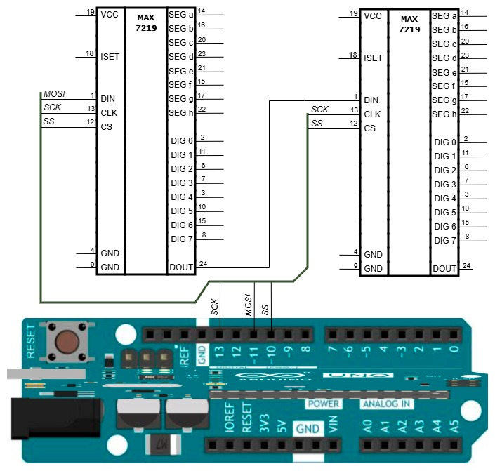
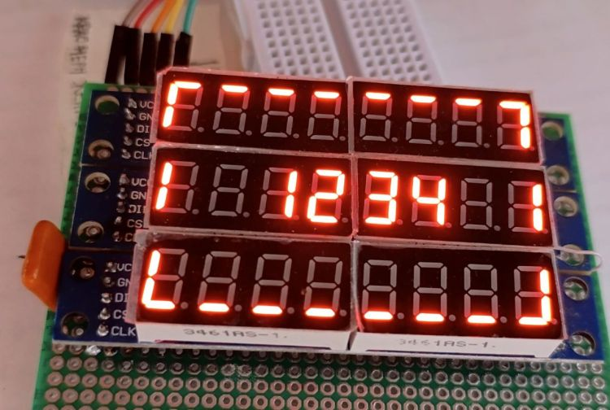

Изучается механизм передачи данных в MAX7219, к трёхпроводной шине SPI подключаются несколько MAX7219 со своими светодиодными матрицами или индикаторами, рассматривается способ индивидуального управления MAX7219, входящими в такую группу.
Понять принцип и научиться управлять несколькими MAX7219, подключёнными к Arduino через SPI.
В предыдущем этюде для передачи информации в MAX7219 использовалась эта функция:
void writeTo7219(uint8_t reg, uint8_t data) { // передача в MAX7219
PORTB &= ~PIN_CS_MASK; // установить низкий уровень на линии SS
SPI.transfer(reg); // передать адрес регистра, куда будут записываться данные
SPI.transfer(data); // передать данные
PORTB |= PIN_CS_MASK;} // установить высокий уровень на линии SS
Можно понять, что в ней происходит, если учесть, что MAX7219 в той части, которая относится к приёму данных через SPI, представляет собой 16-разрядный сдвиговый регистр. Запись в него становится возможной при низком уровне на линии SS (первая строка функции). Далее библиотечная функция SPI.transfer проталкивает переданный в неё байт в сдвиговый регистр: выставляет на линии MOSI очередной бит этого байта, а затем выдаёт на линию SCK тактовый импульс. С каждым тактовым импульсом очередной бит записывается в первый триггер сдвигового регистра и вызывает продвижение уже записанных битов глубже в сдвиговый регистр. Функция SPI.transfer вызывается дважды: сначала передаются 8 бит адреса, затем 8 бит данных, и после выполнения третьей строки адрес и данные полностью размещены в сдвиговом регистре. Четвертая строка возвращает высокий уровень на линию SS, что блокирует дальнейшую запись в сдвиговый регистр и вводит его содержимое в действие: записывает младший байт из сдвигового регистра в регистр MAX7219, адрес которого указывает старший байт сдвигового регистра.
В программу из предыдущего этюда добавлены две новых команды: команда w=байт_в_16-ричном_представлении, которая вводит указанный в ней байт в сдвиговый регистр, и команда s=байт, которая устанавливает на линии SS низкий уровень, если указанный байт равен 0, и высокий в противном случае. Используя эти команды, можно вручную проделать все шаги записи в MAX7219 и наблюдать их эффект на индикаторе и/или осциллографе.
После запуска программы в регистре 9 режима MAX7219 нуль, то есть включен режим без декодирования, в регистрах 1-8 отображаемых данных MAX7219 тоже нули. Эти нули в этом режиме гасят все сегменты, ни один разряд индикатора не светится. Если теперь включить для всех разрядов режим с декодированием, то нули в регистрах 1-8 вызовут зажигание во всех разрядах цифры 0. Чтобы перейти в режим с декодированием, надо в регистр 9 записать значение ff, и зажигание на индикаторе восьми нулей будет наглядным подтверждением успешной записи. Для этой записи было бы достаточно одной команды 9=ff, но здесь для лучшего понимания выполняемой операции команда будет передана пошагово.
Электрическая схема как в предыдущем этюде, в роли светодиодной матрицы 8-разрядный семисегментный индикатор. При включении индикатор погашен, на линии SS высокий уровень. Операция записи ff в регистр 9 состоит из следующих шагов:
s=0w=9w=ffs=1После выполнения последнего пункта индикатор загорается, во всех разрядах светятся нули. Далее можно, например, зажечь в старшем разряде единицу, передав последовательность команд s=0, w=8, w=1, s=1, которой эквивалентна команда 8=1.
Если продолжать запись в 16-разрядный сдвиговый регистр MAX7219, то содержащиеся в нём данные будут, замещаясь новыми, бит за битом продвигаться в регистре и выдвигаться из него на выход DOUT микросхемы. Этот выход можно соединить со входом DIN подключённой к той же шине SPI второй микросхемы MAX7219, и тогда данные из сдвигового регистра первой MAX7219 побитно переместятся в сдвиговый регистр второй MAX7219. Такой цепочкой DIN-DOUT можно к одной шине SPI с одной линией SS подключить несколько MAX7219, а к ним соответствующее количество индикаторов.
В этом разделе рассматривается конфигурация с двумя MAX7219 и двумя индикаторами. На схеме не показаны индикаторы, цепи питания и детали, несущественные для данного описания. В описании номер индикатора равен номеру микросхемы, к которой он подключен. Первая микросхема может называться ближней, вторая дальней.

Повторим опыт из предыдущего раздела — переведём все разряды обоих индикаторов в режим с декодированием, после чего на обоих индикаторах должны загореться нули во всех разрядах. Для этого следует:
s=0w=9w=ff. После этого шага данные (9 и ff) записаны в сдвиговый регистр первой MAX7219, индикаторы погашены.w=9 ещё разw=ff ещё раз. После этого шага в сдвиговых регистрах и первой, и второй MAX7219 содержатся байты 9 и ff, оба индикатора погашены.s=1. После этого шага выполняется команда перехода в режим с декодированием, загораются оба индикатора с нулями во всех разрядах.Далее зажжём 1 в младшем разряде первого индикатора, для чего передадим адрес 1 и значение 1 последовательностью команд s=0 w=1 w=1 s=1. На индикаторе загорится число 00000001.
Затем, желая заменить в этом числе 1 на 2, передадим команды s=0 w=1 w=2 s=1. На первом индикаторе загорится 00000002; в то же время на втором индикаторе 00000000 сменится на 00000001, хотя это в наши намерения не входило. Причина в том, что при выполнении команд w=1 w=2 ранее содержавшиеся в сдвиговом регистре первой микросхемы байты 1 и 1 сдвинулись и записались в сдвиговый регистр второй микросхемы, а при переходе к высокому уровню на линии SS она интерпретировала эти байты как команду отобразить символ 1 в младшем разряде индикатора. Если в этом состоянии с целью изменить содержимое первого индикатора с 00000002 на 00000003 передать последовательность s=0 w=1 w=3 s=1, то опять помимо запрошенного действия произойдёт нежелательное изменение содержимого второго индикатора.
Чтобы устранить этот недостаток, разработчики MAX7219 предусмотрели в ней регистр-пустышку с адресом 0. Для той микросхемы в цепочке, состояние которой надо оставить неизменным, можно передать произвольный байт в регистр 0. Содержимое её рабочих регистров не изменится и не будут выполнены никакие действия, в то же время состояние других микросхем в цепочке, в которые были переданы актуальные данные, изменится в соответствии с ними. Пусть, например, на первом индикаторе число 00000003, на втором 00000002, и требуется заменить 3 на 4 на первом индикаторе, а второй оставить без изменений. Это можно сделать в операции, содержащей следующие шаги:
s=0w=0w=0. После этого шага в сдвиговый регистр первой MAX7219 записаны байты 0, 0.w=1w=4. После этого шага в сдвиговом регистре второй MAX7219 0 и 0, а в сдвиговом регистре первой 1 и 4.s=1 . После этого шага первая MAX7219 меняет в первом разряде индикатора 3 на 4, вторая ничего не делает, содержимое второго индикатора не меняется.Таким образом, когда последовательно соединены две MAX7219, для управления ими и для обновления отображаемой информации необходимо последовательно передавать две пары байтов (адрес, данные): сначала для дальней микросхемы, затем для ближней. Две пары байтов необходимо передавать даже когда изменения затрагивают только одну микросхему — в этом случае для другой микросхемы надо передать пустышку (0, произвольный байт). Инициировав обновление командой s=0, передают группы команд w=адрес w=данные для каждой микросхемы, начиная с дальней. Заполнив таким образом сдвиговые регистры обеих MAX7219, выполняют команду s=1.
Подход, описанный выше для двух MAX7219, соединённых в цепочку выводами DOUT-DIN, работает и для произвольного количества этих микросхем в цепочке — произвольного до тех пор, пока в дело не вступят задержки, паразитные ёмкости, помехи и т.п. Далее отойдём от «низкоуровневого» управления посредством команд s и w и модифицируем систему команд регистр=значение, появившуюся ещё в предыдущем этюде так, чтобы значение можно было передать в заданный регистр заданной микросхемы, не влияя на остальные микросхемы в цепочке. Электрическая схема остаётся той же, что в предыдущем разделе этого этюда, дополнительные микросхемы MAX7219 подключаются аналогично. Следует стремиться к сокращению длины проводов в SPI, а рядом с каждой MAX7219 должен быть керамический конденсатор ~10-100 нФ, подключённый к общему проводу и линии питания +5 В.
Интерпретатор команд дополнен возможностью разбирать команды вида nx=y, где n — необязательный номер микросхемы (от 1 до заданного в программе значения maxChipNo, один 16-ричный символ), x — обязательный адрес (один 16-ричный символ), y — обязательное значение для передачи в регистр MAX7219, имеющий указанный адрес (один или два 16-ричных символа). Например, команда 29=ff передаст значение ff в регистр 9 второй микросхемы. Если номер микросхемы не указан, то он считается равным 1, поэтому, например, команды 9=ff и 19=ff эквивалентны.
Количество подключённых к SPI микросхем MAX7219 задано параметром maxChipNo, для изменения которого требуется перекомпиляция. При запуске программа настраивает всё указанное количество микросхем, переводит их в режим без декодирования и записывает нули в регистры 1...8, чем гасит все подключенные к микросхемам светодиоды. После этого в качестве простого теста работоспособности можно передать в одну или более микросхем команду перехода в режим с декодированием n9=ff, где n — номер микросхемы. На соответствующем индикаторе должны загореться нули во всех разрядах.
На фотографии три MAX7219 в цепочке. Элементы изображения получены следующими командами.
Верхний правый угол:
19=1 или 9=111=7 или 1=7Верхняя горизонтальная линия:
2=40 3=40 ... 7=40Верхний левый угол:
8=46Нижняя линия и углы:
31=38, 32=8, 33=8, ..., 37=8, 38=eСредняя строка:
29=3d 21=1 23=4 24=3 25=2 26=1 28=6
s и w — первая управляет состоянием линии SS, вторая передаёт байт данных. Такое же пошаговое исследование с использованием этих команд проведено для соединённых в цепочку двух MAX7219. Сформулирован алгоритм работы с произвольным количеством MAX7219, а придуманная в предыдущем этюде система команд вида регистр=значение доработана для управления несколькими MAX7219: теперь поддерживаются команды вида nx=y, где n — номер микросхемы, x — регистр, y — значение для записи в этот регистр. Программа успешно опробована на конфигурации из трёх MAX7219 с индикаторами.
Команда ?= выведет общую информацию о программе и поддерживаемых командах, описание команды nx=y. Информация о командах s и w выводится по команде ?=команда.
Текст программы содержится в файле Ind_y_Ardu.ino, который можно получить с Github по ссылке.
Как вариант, для получения файла можно взять с Github весь репозиторий цикла "Ардуино и индикаторы" и выполнить команду git restore -s MAX7219_2 -- Ind_y_Ardu.ino